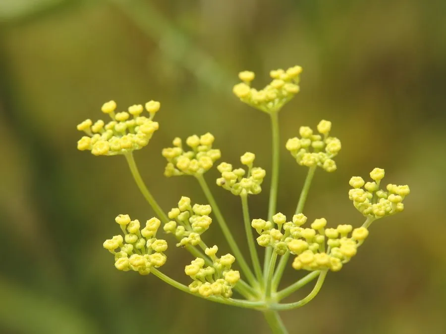

农作物与经济植物 · 植物界
小茴香 Foeniculum vulgare

伞形科多年生草本，羽状细裂叶如羽毛，种子含茴香脑、香气浓烈，是重要的香料作物与常用药用植物。
- 分类
- 门被子植物门纲木兰纲目伞形目科伞形科属茴香属
- 栖息环境
- 地中海气候的干燥坡地、田边，喜光、耐旱、忌积水
- 地理分布
- 原产地中海沿岸与西亚，中国北方普遍栽培，世界各地广植
- 保护级别
- 暂无评估；栽培作物，逸生种群常见
物种志
小茴香为伞形科茴香属多年生草本（栽培上常作一二年生），株高 1–2 米，茎直立，表面有纵纹。叶片羽状细裂，裂片丝状，形如羽毛，蓝绿色。复伞形花序顶生，花小，黄色，花期 5–7 月；双悬果长圆形，长 4–6 毫米，有纵棱，成熟后香气浓郁，即“小茴香”。
小茴香原产地中海沿岸与西亚，自古为重要香料，中国北方广为栽培。其果实含茴香脑、茴香酮等挥发油，是五香粉、咖喱与卤味的核心香料，也是中医“温阳散寒、理气止痛”的常用药。球茎型品种（佛罗伦萨茴香）的肥厚叶鞘可作蔬菜。栽培喜凉爽、阳光充足，适宜疏松肥沃、排水良好的土壤，播种繁殖，忌连作与积水；果实转黄时割取全株，晒干脱粒。
形态与习性
- 原产地地中海沿岸与西亚
- 株高1–2 米，叶片羽状细裂如丝
- 香料果实含茴香脑，是五香粉与咖喱的原料
- 用途调味香料、理气药材，球茎品种可作蔬菜
- 栽培喜凉爽向阳，播种繁殖，忌积水与连作
- 采收果实转黄时割株，晒干脱粒
趣味知识
- 小茴香的果实才是香料，细小如米粒，咬开有浓烈的甜香。
- 它和“八角”常被混淆：八角是木兰科乔木的果实，小茴香是伞形科的草本种子。
- 印度餐厅门口常摆一小碟糖衣茴香籽，餐后嚼食清新口气。
- 佛罗伦萨茴香的肥厚球茎可烤可炖，是意大利菜的常见食材。